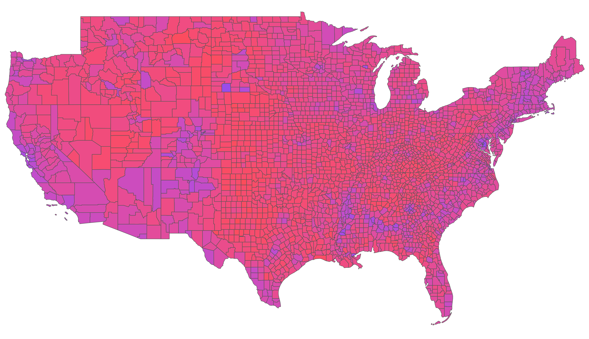

US Presidential election forecasting
Election forecasting is a popular activity. There are many models, some
of which look only at polling data, while others incorporate data on
``fundamentals" such as inflation and unemployment rates. One problem in
evaluation and production of forecasts is that high-stakes elections are
relatively rare, so getting enough data can be tricky.
This project will evolve as I get more time to work on it, and the key
data and code can be found on Github. All the code is in
R, consistently using the tidyverse and tidymodels approach. As a start,
I will consider the first type of model, using only historical
information on voting in US Presidential elections, plus a single
polling average. As time permits, I intend to refine the analyses, and
apply the methodology to countries outside the US.
Data
There are many choices to be made. Much data on US elections is available
(I got some from
the MIT Elections
Project) in order to save harvesting from 51 individual websites).
For polling data, I used individual years from Wikipedia and RealClearPolitics to get either the final Gallup
poll or the RCP polling average as late as possible before Election Day.
I settled on county-level data, for which MIT provides data from 2000 to 2020
inclusive. Counties have no particular electoral
significance, but they are a subdivision of a state whose boundaries
rarely change (unlike congressional districts), and there are over 3000
of them in the US, which will give us a decent number of data points.
Counties have a great variation in size: Los Angeles County has over 10
million people, while some counties have around 200000. Each county is
identified by a unique FIPS code, widely used for geographic units. For
example, Los Angeles County is 06037. The 06 is for California, and each
county has a 3-digit code.
Despite the overall high quality of the data, some data cleaning is needed. I
need to let them know at MIT that the famous Bush-Gore Florida 2000
results are wrong, for example. Preliminary analysis as below revealed
some strange results, which I tracked down to the fact that some
counties had changed names and FIPS codes. Also, there is something
weird about Kansas City, which intersects several counties and has a
strange FIPS code 2938000, so I deleted that data entirely for now.
The CSV is not in the tidy data format, but rather in "wide" format. For example,
the first row looks like
| 2000 | ALABAMA | AL | AUTAUGA | 1001 | US |
PRESIDENT | AL GORE | DEMOCRAT | 4942 |
| 2000 | ALABAMA | AL | AUTAUGA | 1001 | US |
PRESIDENT | GEORGE W. BUSH | REPUBLICAN | 11993 |
while we really want a column for Democrat and another for Republican votes. This is
easily fixed via the tidyr function pivot_wider.
Exploring the data
First, let's look at a choropleth map of 2020 election results by county
(excluding Alaska and Hawaii). The bluer the color, the higher the share
of the vote won by the Democratic party in that county, so a vote share
of 0 is bright red and a vote share of 1 is bright blue. Note that there
are more than two parties, and I lump all votes other than D or R into
Other - the Other total is never enough to "win" any county, let alone
any state. For the purposes of the map, Other is excluded, but it
doesn't make much difference to the naked eye. Note that there are a few
obvious standouts - can you see the Oglala Sioux reservation in South
Dakota? - but the idea that there are "red" and "blue" states is
obviously a great oversimplification. The smallest D vote share (30.9%)
was in Roberts County TX, and the largest (apart from Washington DC
which counts as a county for our purposes) was 89.3% in Prince George
County MD, which borders Washington DC.

Prediction
Our goal is to predict the 2020 results as well as possible using only
historical voting data and the opinion poll average. We will predict
vote share of D and R in each county. A first step is to ignore polling
data altogether. How well can we predict the 2020 results just from the
elections in 2000-2016? The answer may be surprising for those more
used to forecasting in other countries.
The correlation between D or R vote share in 2020 and in 2016 is 0.869.
When we use a simple linear regression (pure lasso model) where
2000-2016 is the training data and 2020 is the test data, the results
are pretty good: linear regression for D vote share (with the only
predictors being the D and R vote shares in previous elections in that
county) has RMSE 0.0384 and R^2 = 0.967, with slightly better results
for the regression (RMSE 0.0251, R^2 = 0.969) for R vote share.
There is no reason to suspect that linear regression is the right tool
here. However, training a random forest or XGBoost implementation in R
on the same data yields only small improvements (RMSE still at least
0.0217 in all cases).
Moving on to incorporate polling data, we are faced with the fact that
most polls are national. The standard way to downscale changes in
national vote shares to a smaller district such as a county is to use a
"swing model". The most popular is uniform swing: if we add 5% to a
party's overall vote share then we simply impute a 5% increase to it in
each county. This obviously can't be correct in general (see my paper with Bernie Grofman) but seems fairly good in
practice. In the paper we suggest a piecewise linear model, which
treats positive and negative swings differently, and which has better
theoretical behavior. They give very similar results on this dataset
(correlation of 0.995) so we use the piecewise swing only. Simply using
the county-level predictions derived from the swing model gives a
correlation with the true 2020 result of 0.904. Training on all data
2000-2016 yields RMSE 0.0269 and R^2 = 0.973 for D vote share with random forest, with
larger RMSE (0.0335) for R vote share.
State-level results
Aggregating the county-level vote share predictions requires an idea of
turnout (how many people voted in total). For now, we use the actual
turnout in 2020, which of course we don't know when making a real
prediction. Another option is to assume turnout percentages are constant
over counties, and use county population data or data on registered
voters. Finding county-level information on turnout will be harder, and
will likely involved checking state by state. However, we know that at
the state level, turnout can vary from under 50% in some states to more
like 75% in others, so this seems a suboptimal method. More
sophisticated turnout models can also be tried, based on modeling, which
will be a whole other project. There is plenty to do in future!
Using the actual turnout numbers, the best-performing vote share
predictor, namely RF, is correct on all states (plus DC) except Georgia
and Florida (so predicted a bigger win to D than in fact occurred). The
others were wrong on 4 states.
Possible improvements and extensions
Some obvious ideas for refining the predictions:
- Improved polling data: more polls, so a trend might be apparent;
different averaging and combining different aggregators; state-level
polling for close states; prediction markets.
- Tuning hyperparameters: I used RF and XGBoost "out of the box", with no
attempt to find a better fit.
- Probabilistic winner forecasts: randomizing over multiple runs.
Some extensions:
- Try the model on 2024 election data (when available) without/with
further training.
- Add some variables for fundamentals, demographics, or opinion (e.g. ANES
data). I tried this unsystematically and even on ANES data, when
predicting an individual vote it seemed that only opinion seemed to have any serious
influence on the respondent's recalled vote. But I have not seriously looked at
ethnic group, education, etc.
- Incorporate other polling averages, such as prediction markets or other aggregators.
- Learn about and use predictive modeling for time series.
- Try the same general methodology to predict parliamentary elections in
UK and Canada.
- Rather than prediction, look at counterfactuals: what happens under
different assumptions on swing or voter drift (which has applications to
analysis of districting), or what would happen under vote-swapping
between districts (which has applications to campaign strategy or
demographic changes).
Last update 2025-05-19